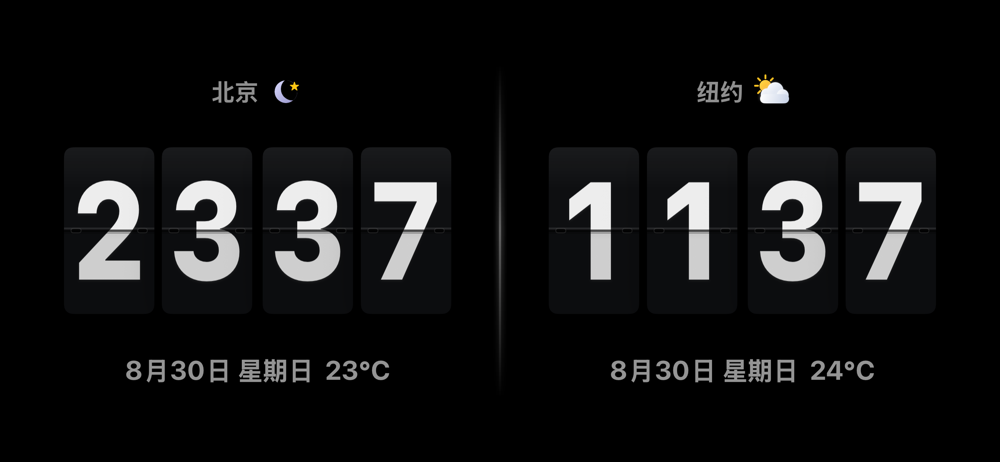
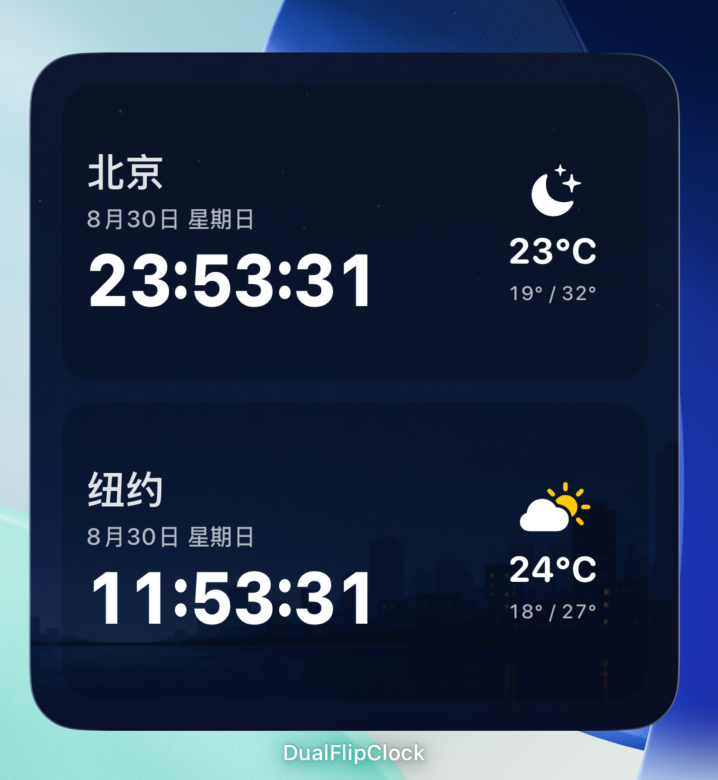

双城同屏Two cities, one screen
家人、团队或旅途，两地时间无需换算，一眼便知。No conversions. See both places in one calm, clear view.
为跨越时区的牵挂而生Made for lives across time zones
在同一块屏幕上，看见两座城市的时间与天气。
简洁、安静，适合桌面，也适合床头。
See the time and weather in two cities at a glance.
Quietly designed for your desk or bedside.
免费下载 · 支持 iPhone 与 iPad · iOS 17+Free download · iPhone and iPad · iOS 17+

一眼，跨越时区A world at a glance
家人、团队或旅途，两地时间无需换算，一眼便知。No conversions. See both places in one calm, clear view.
时间、日期与实时天气自然融为一体，信息恰到好处。Time, date and live weather—only what matters, beautifully composed.
随所选城市进入昼夜，深夜自动柔和，不打扰空间。Adapts to each city's day and night, with a softer late-night display.

源于真实的牵挂Born from a real connection
DualFlipClock 起源于一位父亲与海外求学女儿的日常：希望无需计算，就能知道彼此此刻身处清晨还是夜晚。于是，两座城市被放在同一块屏幕上，让时间成为一种安静的陪伴。DualFlipClock began with a father and a daughter studying far from home: a wish to know, without calculating, whether it was morning or night where the other person was. Two cities came together on one screen, turning time into a quiet sense of presence.